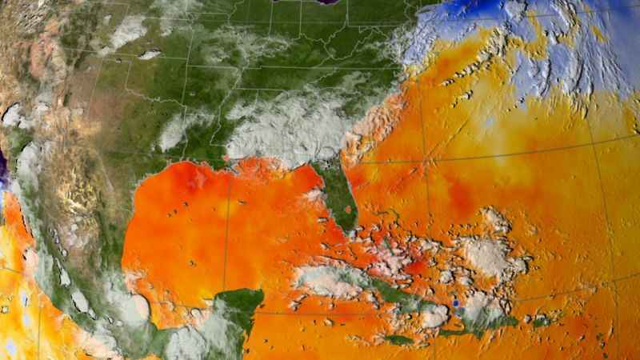
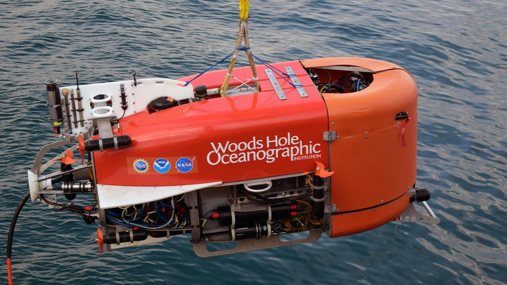

Tentar "simular a vida" usando uma técnica de inteligência artificial conhecida como machine learning para prever o impacto do aumento da temperatura na superfície do oceano Austral em microrganismos que o habitam.
Esse foi o objetivo do trabalho realizado por uma equipe multidisciplinar que inclui o oceanógrafo Marcos Tonelli e a bióloga Amanda Gonçalves Bendia, pós-doutorandos e professores colaboradores do Instituto Oceanográfico da Universidade de São Paulo (IO-USP), além de outros cinco cientistas da instituição: Juliana Neiva, Bruno Ferrero, Ilana Wainer, Camila Signori e Vivian Pellizari.
No estudo, os pesquisadores consideraram quatro cenários de emissões para avaliar a sensibilidade da superfície do oceano Antártico ao aquecimento global. Trabalhando com microrganismos que compõem a base da cadeia alimentar, descobriram uma tendência de diminuição de alguns seres envolvidos em processos biogeoquímicos cruciais, produtores de nutrientes necessários a eles e a muitas outras formas de vida.
Além disso, também detectaram um aumento de alguns grupos que dependem do consumo desses nutrientes, pois não produzem seu próprio alimento (heterotróficos). Foram usadas no estudo duas formas de predição. Na primeira, intitulada índice de diversidade, os cientistas tiveram como foco as diferenças na redução da diversidade de organismos conforme os cenários.
Foram usadas no estudo duas formas de predição:
Na primeira intitulada índice de diversidade, os cientistas tiveram como foco as diferenças na redução da diversidade de organismos conforme os cenários.
"Num cenário de maior emissão, teremos perda significativa de diversidade", adianta Tonelli, primeiro autor do artigo, publicado recentemente na revista Frontiers in Marine Science.
A segunda foi a predição relativa a grupos taxonômicos específicos (no nível de ordem), na qual a equipe percebeu que grupos muito importantes para o ambiente, e não só da Antártica, apresentaram diminuição na abundância. O trabalho tem apoio da FAPESP por meio de dois projetos (12/23241-0 e 18/14789-9)
Cientistas usam inteligência artificial para simular efeito do aumento da temperatura no oceano Antártico
Os quatro cenários socioeconômicos considerados pelos cientistas foram estabelecidos no âmbito do Programa Mundial de Pesquisa do Clima (WCRP, na sigla em inglês), que coordena o desenvolvimento de modelos do clima e do sistema terrestre pelos principais centros de modelagem do mundo, no âmbito de um projeto denominado Coupled Model Intercomparison Project, agora em sua sexta fase (CMIP6)
Os modelos do CMIP6 simulam o clima em diferentes cenários de atividade humana sobre o ambiente no futuro, denominados SSP (caminhos socioeconômicos compartilhados, na sigla em inglês)
Para esse estudo, foram considerados quatro cenários SSP que ilustram os possíveis drivers antropogênicos do aquecimento global: SSP1-2.6 (o caminho da sustentabilidade, com baixo desafio para mitigação e adaptação); SSP2-4.5 (o meio-termo, com desafios médios para mitigação e adaptação); SSP3-7.0 (cenário de rivalidade regional, com grandes desafios para mitigação e adaptação); e SSP5-8.5 (cenário de desenvolvimento movido a combustível fóssil, com grandes desafios para a mitigação e baixos desafios para a adaptação)
"Os cenários de altas emissões projetaram um surgimento muito mais precoce da mudança de temperatura induzida pelo homem em todo o oceano Austral", adianta Tonelli
As simulações indicam uma diminuição na riqueza e na diversidade das comunidades microbianas em todas as projeções climáticas, sendo que as emissões mais altas causariam uma diminuição mais significativa, especialmente no cenário mais crítico (SSP5-8.5)
Enquanto o cenário de baixa emissão (SSP1-2.5) projetou pequenas mudanças na abundância relativa de microrganismos, os três cenários com o maior aumento na temperatura, incluindo o cenário do "meio-termo", mostram mudanças na estrutura das comunidades microbianas que incluem a perda de diversidade e a diminuição na taxa de microrganismos importantes para os processos biogeoquímicos e o funcionamento do ecossistema no noroeste da Península Antártica e a noroeste do mar de Weddel
Bendia destaca uma arqueia da ordem Nitrosopumilales que oxida a amônia. Ela explica que toda a vida na Terra está dividida em três grandes domínios (Bacteria, Archaea e Eukarya), e o domínio das arqueias ainda é pouco estudado
"Esse grupo de arqueia da ordem Nitrosopumilales faz a oxidação de amônia e fixa dióxido de carbono [CO2], sendo relativamente conhecido pela ciência. É bem abundante na Antártica, pois gosta de águas geladas
E nele notamos uma redução drástica após a predição. Essa arqueia faz um processo de remineralização da matéria orgânica, faz a ciclagem de nutrientes do ambiente para que outros microrganismos usem. Se houver interrupção nesse processo, os outros microrganismos não vão ter nutrientes
Há outro grupo, esse de bactérias, que faz oxidação de compostos de enxofre, que também diminuiu. Certos compostos de enxofre na forma reduzida podem ser tóxicos para alguns organismos do ambiente, então elas fazem a oxidação desses compostos."
Segundo ela, também houve redução em grupos pouco conhecidos, como uma arqueia planctônica chamada Marine Group II. Em contrapartida, o modelo projetou maior abundância relativa para a ordem dos Flavobacteriales, que compreende várias famílias de bactérias heterotróficas.
"Esperávamos uma alteração na predição feita com base nos vários cenários e modelos de machine learning, mas não imaginávamos que elas fossem acontecer nesses grupos-chave de microrganismos, muito importantes para o ecossistema e os ciclos biogeoquímicos", afirma Bendia.
Reiterando que tais ordens são compostas por várias espécies com papéis importantes no funcionamento dos ecossistemas oceânicos, incluindo os ciclos de enxofre, nitrogênio e carbono - e são atualmente consideradas abundantes na superfície oceânica.
"Estamos falando da parte mais baixa da cadeia trófica, dos produtores primários; dali parte toda a cadeia alimentar que chega até os grandes mamíferos.
Se os consumidores estão aumentando e os produtores não, como é que isso vai repercutir nos níveis lá de cima?
Ainda não sabemos e precisamos de um bom time de especialistas para entender isso. Mas acredito que alguns grupos serão privilegiados e outros sofrerão com as mudanças", resume Tonelli.
As implicações de uma diminuição na oxidação da amônia nos ecossistemas estudados ainda não estão claras, mas alguns estudos de modelagem indicaram que ela pode afetar os nutrientes, a desnitrificação (transformação do nitrato em outras formas de nitrogênio que podem retornar à atmosfera), a produtividade marinha e o sequestro biológico de carbono pelos oceanos.